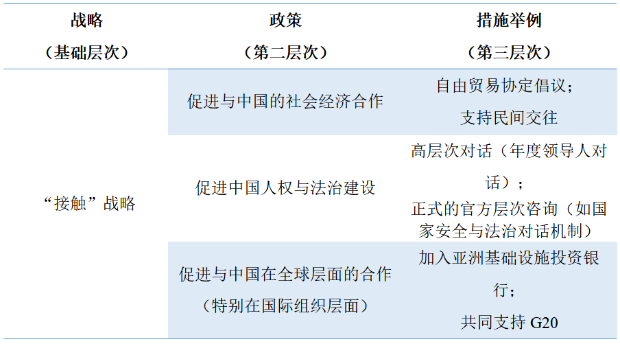
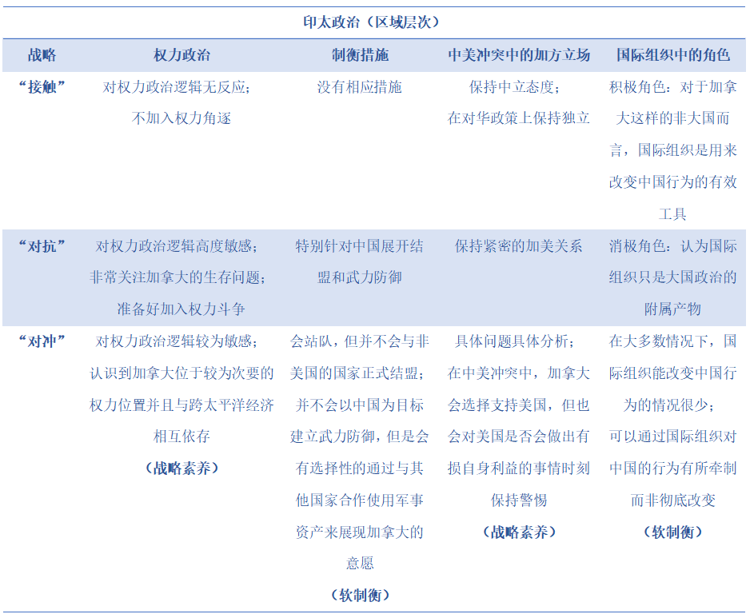
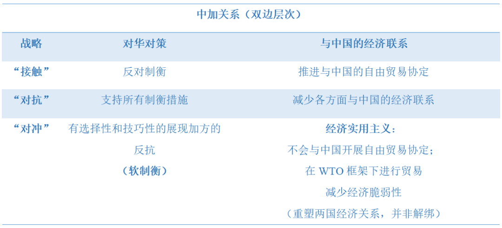
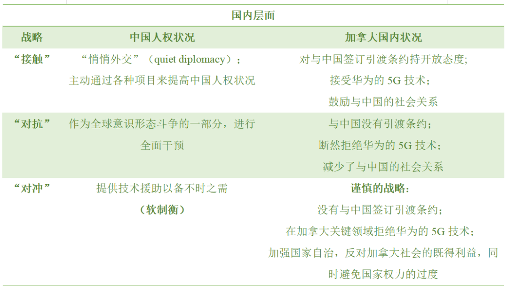
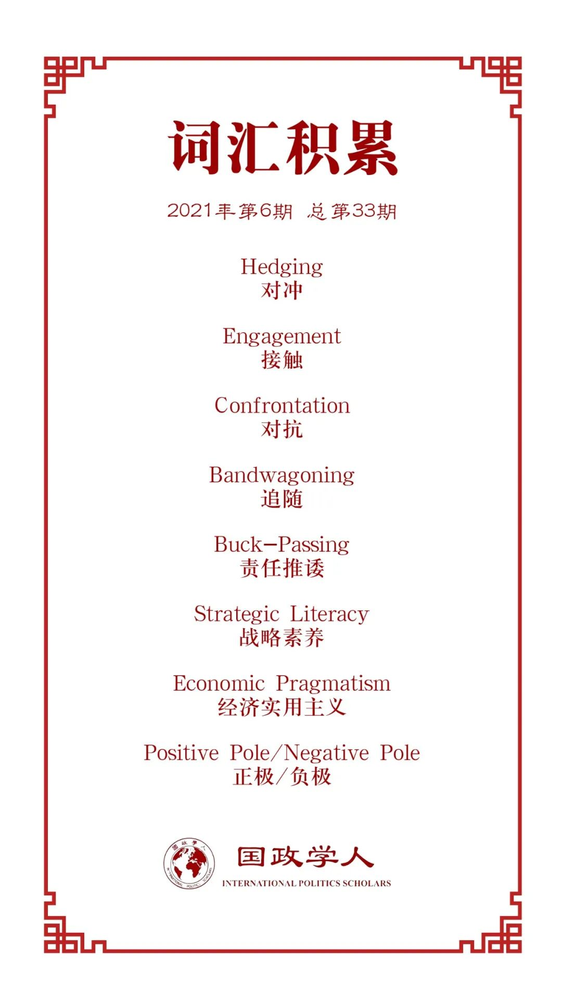

收录于合集

作品简介
【作者】 川崎健（Tsuyoshi Kawasaki），西蒙弗雷泽大学政治学系副教授，主要研究重点是日本及其对外关系，在亚太地区和跨太平洋关系，包括加拿大和亚洲的关系方面也有着广泛研究。
【编译】 杨稚珉（国政学人编译员，上海外国语大学）
【校对】 胡瑞琨
【审核】 江若婵
【排版】 余姣
【美编 】李九阳
【来源】 Tsuyoshi Kawasaki (2021): Hedging against China: formulating Canada’s new strategy in the era of power politics, Canadian Foreign Policy Journal , DOI: 10.1080/11926422.2021.1901755
https://doi.org/10.1093/isq/sqaa091
【归档】 《国际关系前沿》2021年第6期，总第33期。
期刊简介
《加拿大外交政策》（ Canadian Foreign Policy Journal ，简称CFPJ）是由加拿大卡尔顿大学诺曼·帕特森国际事务学院（简称NPSIA）每年出版三次的跨学科期刊。该期刊成立于1992年，目前是关于加拿大国际事务的权威刊物，主要内容涉及国际贸易、经济、政治、全球治理、国家安全与外交等。
对冲战略： 构建权力政治时代
加拿大对华新战略
Hedging against China: formulating Canada’s new strategy in the era of power politics
川崎健（Tsuyoshi Kawasaki）
内容提要
加拿大需要一个新的对华战略，在当前形势下其传统的“接触”战略已被宣布无效。新战略的核心概念应该是什么呢？本文提出了“对冲”这一现实主义概念，并证明其处于“对抗”（另一现实主义概念）和“接触”（自由主义概念）的中间地带，并在战略素养、软平衡、经济实用主义和审慎的战略等原则上有独特之处。为了进一步论证这一观点，本文采用了加里·盖尔茨（Gary Goertz）、约翰·吉尔林（John Gerring）和大卫·科利尔（David Collier）等人分别阐释的概念构建和测量方法，同时解释了为何一些可供替代的战略选择（如追随、超越等）也不值得采用。
01
导论
2016年，贾斯廷·特鲁多政府启动了一项综合性的对华“接触（engagement）”战略。然而目前面对中加关系出现“前所未有的危机”，这种战略已然失效。在2020年加外交部副部长向加中关系特别委员会（the Special Committee on Canada-China Relations）提交的文件中表示当前有必要开始探讨加中关系的新框架。
但目前仍未有与“接触”战略具有一样功能的核心概念出现，为一系列政策构建一个连贯、有序的体系。因此，本文提出对华“对冲（hedging）”战略这一概念。“对冲”是介于“接触”与“对抗（confrontation）”之间的一种概念，也不是两种概念的混合。“对冲”具有自身独特的立场，在战略素养、软平衡、经济实用主义和审慎的战略等原则上有独特之处。
本文将从方法论入手，并整理贾斯廷·特鲁多政府2019年之前的中国政策文件，从中归纳出“接触”战略的概念结构。在此基础之上，本文将继续展开一系列的概念构建工作。首先，作者将推导出“对抗”概念并解释其为何不可行。其次，作者将“接触”与“对抗”这两种概念进行对比，并由此演绎出“对冲”概念。随后，作者将在具体政策层面讨论“对冲”战略可能带来的政策反应。此外，本文还解释了未采用部分可供替代概念的原因。
02
方法论
为了更好的构建新的对话战略，本文采用了加里·盖尔茨（Gary Goertz）提出的理论框架，并辅以约翰·吉尔林（John Gerring）的概念构建和测量方法，以及大卫·科利尔（David Collier）等人所提出的类型学方法。同时， 所提出的战略概念也要满足两个最基本的客观情况：一是加拿大周边的权力政治环境；二是与中国相互依存的社会经济关系。
由于盖尔茨的研究主要关注到现象概念（phenomenon concept），而如“接触”战略是一种政策概念（policy concept），因此作者需要对盖尔茨的理论指导进行一定修改。政策概念一般从三个层次入手：战略（基础层次）、多样化的政策选择（第二层次）、不同的政策实践方法（第三层次），并且每个政策概念拥有自己的战略目标及核心假设。
基于此，本文将理论构建分为以下四个步骤：（1）将某一概念划分三个层次进行研究；（2）将目标概念指定为正极（positive pole），并分析出其对立面，即负极（negative pole）。随后进行反向实验，若将负极作为新的正极，其负极是否与原正极匹配；（3）建立正负两极间的连续、统一理论；（4）第二步、第三步需在三个层次均得到验证。
03
“接触”战略
1. “接触”战略的目标与核心假设
从2017-2018年与2018-2019年加拿大加拿大外交部的计划中可以看出，在加拿大外交政策总体框架中， 对华“接触”战略的根本目标旨在促使中国成为基于国际秩序规则的责任攸关国家。
而“接触”战略的核心假设则包括两点：
一方面，加方认为中国是基于国际秩序规则下的合作伙伴，因此中加政治关系在很大程度是一种积极的 合作关系 。如《2017-2018年加拿大全球事务计划》中就明确提出将中国作为推进加拿大利益的关键双边伙伴之一，并奉行与中国制定全面政府间接触战略的政策。另一方面，加拿大长期以来都从 经济机遇 的角度来考虑对华政策的制定。
2. 分析概念的三层结构：
对盖尔茨理论指导的应用
1) 正极：“接触”战略
本文将“接触”战略视为正极，并从三个层次进行分析：“接触”战略（基础层次）、现有的一系列政策（第二层次）及每个政策的具体措施（第三层次）。

由此可见，在“接触”战略之下，若要与中国的社会经济关系脱钩，需要付出高成本代价，并且面对权力政治环境的压力也无可奈何。因此，本文认为“接触”这一概念不再适合加拿大的对华战略。
2) 负极：“对抗”战略
当“接触”战略作为正极后，文章下一步需寻找何种概念是可替代“接触”的。有部分学者认为“接触”与“均衡（balancing）”是一种连续政策的两极，而“对冲”处于它们的中间位置。“均衡”是指一国通过与他国结盟（达到外部平衡）或是通过单方面建立自身的武力装备（达到内部平衡）以应对大国威胁。若将这一假设进行反转验证，其对立面应为“追随（band wagoning）”战略，并非“接触”。因此“均衡”这一概念验证失败，不能作为负极的概念进行考虑。
那么什么概念才能成为负极呢？正如上文所说，“接触”的目的是让中国融入基本的国际秩序规则之中，以此推断其完全相反的目标，即拒绝并排斥中国加入国际秩序。因此，“对抗”这一概念便成为负极的最佳选择。
“对抗”战略的核心假设包括以下几点：首先，这一战略将中国视为基于现有规则的国际秩序下的威胁；第二，由于双方的利益和意识形态无法相容，中加关系被认为是一种零和游戏，存在高度竞争；第三，在“对抗”策略中，加拿大被视作一个“弱小”国家，极易受到来自中国的强制性经济及其他方面措施的伤害。总之，两国间的合作空间很小。
综上，“对抗”战略对与加拿大而言代价太大，在必须满足的两个条件上，“对抗”能够满足在权力政治时代的环境要求，但对于与中国的社会经济关系却未能进行很好的处理。因此，仍需要一个能同时满足两个客观条件的概念。
3) “对冲”战略
在讨论完两个极端——“接触”与“对抗”后，作者关注到位于两者间的“对冲”概念。首先从风险角度入手，如果将中国视为加拿大的合作伙伴与现有国际秩序的潜在支持者，“接触”战略不会认为中国对加拿大的核心利益与价值观有严重威胁。而“对抗”则是认为中国存在风险，并试图完全消除这种风险。因此，处于风险否认（risk denial，即“接触”）与风险消除（risk elimination，即“对抗”）之间的是风险管控——“对冲”能够找到管控潜在风险的办法，并尝试将风险的危害降至最低。
另一方面，继续保持与中国的商业贸易成果。同时也可通过“对冲”利用其他国家市场，减少加拿大产品对中国市场的依赖。并且比起与中国直接签订自由贸易协定，加方也更倾向于在世贸组织的冲突解决机制保障下于中国进行交易。
“对冲”战略的目标是寻求与中国的共存，同时保护加拿大的安全和国家利益。 这种战略既不是理想化地试图改变中国，也不是徒劳无功地妖魔化中国。它只针对中国的现状进行处理。此外，它还有条件地将中国纳入以规则为基础的国际秩序。换句话说，“对冲”的假设认为中国既不是朋友也不是威胁，而是风险或不确定性的来源，是加拿大和其他西方国家在各种问题领域可需应对的挑战。
总而言之，“对冲”处于“接触”与“对抗”之间的中间位置，将其与两个极端概念区别开的是风险这一因素。“对冲”试图对风险进行管控，而“接触”会低估风险，“对抗”则是试图消除风险。这是使用实用主义方法的必然结果。因此，“对冲”战略既能使加拿大在当前大国政治的环境中游刃有余，又能注意到中加在社会经济领域的相互依存关系。
04
未来政策应对
三种战略在不同政策问题上的差异：



05
其他可替代概念
有一些其他的概念也可供参考，如追随（bandwagoning）、超越与隐藏（transcending and hiding）、责任推诿（buck- passing）等。但这些概念都不能成为真正可行的选择。首先，在中美权力斗争的背景下，加拿大选择与中国并肩对抗美国是不现实的，因此追随概念并不适用。超越概念也不能作为核心概念，因为国际组织的力量虽然一直存在，但并不足以对中国产生较大影响。且从长远来看，隐藏、推诿和搭便车等行为都不可行，因为在第一个前提——权力政治盛行的环境下，这样做一方面会让加拿大毫无防御能力，另一方面加方也更易受到来自美国的强加意愿。
06
结论
本文提出加拿大需要在“对冲”概念基础上制定对华新战略。在政策规划中，一方面应将“对冲”战略充实为一个由一系列可相互支撑的政策规划组成的连贯体系；另一方面，在“对冲”的原则下，加拿大能够在不损害中国大国地位的情况下保证自身安全最大化。
作者在文中重点阐述了“对冲”作为政策概念的推断，但关于“对冲”战略能否以及何时得以全面实施仍未作出讨论，也有待在未来讨论如何塑造加拿大对华政策的问题中有所涉及。
译者评述
本文作者提出了“对冲”战略来替代原有的“接触”战略，并在保全加拿大自身利益的同时寻求与中国的合作共存，文章的重点在于从理论角度构建“对冲”这一政策性概念。
由于国家能力与国家意愿的牵制，加拿大对外政策的制定与实施离不开对自身国家定为对考量。一般情况下，加拿大被公认为是国际舞台上“行为规范”的中等国家，因此在特定领域发挥突出作用以及通过国际组织的路径进行活动成为其主要的外交方式。
从“接触”战略来看，在2015年的《展望未来:中加关系的主要议题》（Moving Forward: Issues in Canada-China Relations）报告中Wendy Dobson和Paul Evans等人就提出“与中国更深入、更广泛的接触符合加拿大的国家利益”。由于时值小特鲁多政府上台，带着“加拿大重返国际舞台”的口号，雄心勃勃地参选联合国非常任理事国等事务体现出其对国际多边活动的重视。因而在这一时期，对华“接触”战略能通过加拿大最擅长的两种方式得以实施，使得中加关系在这一时期蓬勃发展。但随着国家能力的变化，在国际局势的催化下，两国在特定领域的矛盾逐渐暴露且日渐走向不可弥合。而国际组织这一多边路径在多变的国际局势中变得不再稳定，两国的接触机会也日渐减少。因而原本行之有效的“接触”战略逐渐失灵，从保证国家利益这一最基础的目的出发，加拿大需对其对华战略进行修正。
那么作者提出的“对冲”是否合适？译者认为除了本文从理论角度系统论证了其在逻辑上的可行性外，还需从三个因素出发考量新战略是否合适——一是加拿大国内政治的倾向，特别是公众舆论对于中国的国家角色有何种认识；二是中国外交政策的取向，特别是考虑到近年来愈发强势的中国外交对这些西方国家来说意味的什么；三是横亘在中加关系间逃不开的美国因素。但除了系统性的战略安排，在具体政策措施上，两国也应继续在共同合作领域加深交往，继续加强通过国际组织渠道进行联络，或者扩宽非联邦层面的交往，加强民间外交往来等手段都有助于两国有效地走出当下关系的“低谷期”。
参考文献
[1] Preston Lim (2020). Sino-Canadian relations in the age of Justin Trudeau, Canadian Foreign Policy Journal , 26:1, 25-40
[2] Farooq, A. B. , & Mcknight, S. (2016). Moving Forward: Issues in Canada- China Relations.
词汇整理

文章观点不代表本平台观点，本平台评译分享的文章均出于专业学习之用, 不以任何盈利为目的，内容主要呈现对原文的介绍，原文内容请通过各高校购买的数据库自行下载。
好好学习，天天“在看”
国政学人
支持学术公益与知识传播
微信扫一扫赞赏作者 __赞赏
已喜欢，对作者说句悄悄话
取消 __
发送给作者
发送
最多40字，当前共字
上一页 1/3 下一页
长按二维码向我转账
支持学术公益与知识传播
受苹果公司新规定影响，微信 iOS 版的赞赏功能被关闭，可通过二维码转账支持公众号。